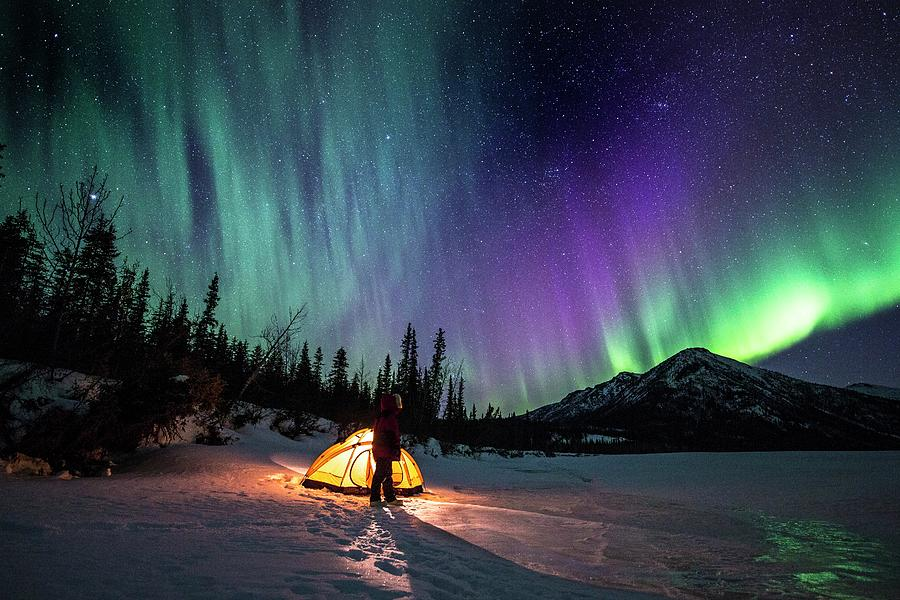

ndia is the world’s largest democratic and secular country. India got independence from British rule on August 15, 1947. The population of India is second largest in the world, next only to China. It land size is seventh largest in the world. laska: The 49th State. The Last Frontier. The Land of the Midnight Sun. The Best Place in the United States to see the Northern Lights. The state where I grew up. To say I love Alaska is definitely an understatement, and the chance to see the northern lights is just one of many reasons. If you want to see the northern lights (or aurora borealis) in Alaska, you’re not alone. Seeing the northern lights is one of the top reasons people travel to Alaska during the cold winter months, and it’s totally worth it. While Alaska is certainly not close to the rest of the U.S., this works out in its favor: it’s far enough north and sparsely populated so that you can have amazing aurora viewing opportunities, even near major cities. If you want to see the aurora in Alaska, I’ve got you covered. I’ve seen the northern lights in Alaska many times – including twice on my most recent trip (August 2022). Here’s all my knowledge and wisdom to help you plan an unforgettable trip to see the northern lights in Alaska.